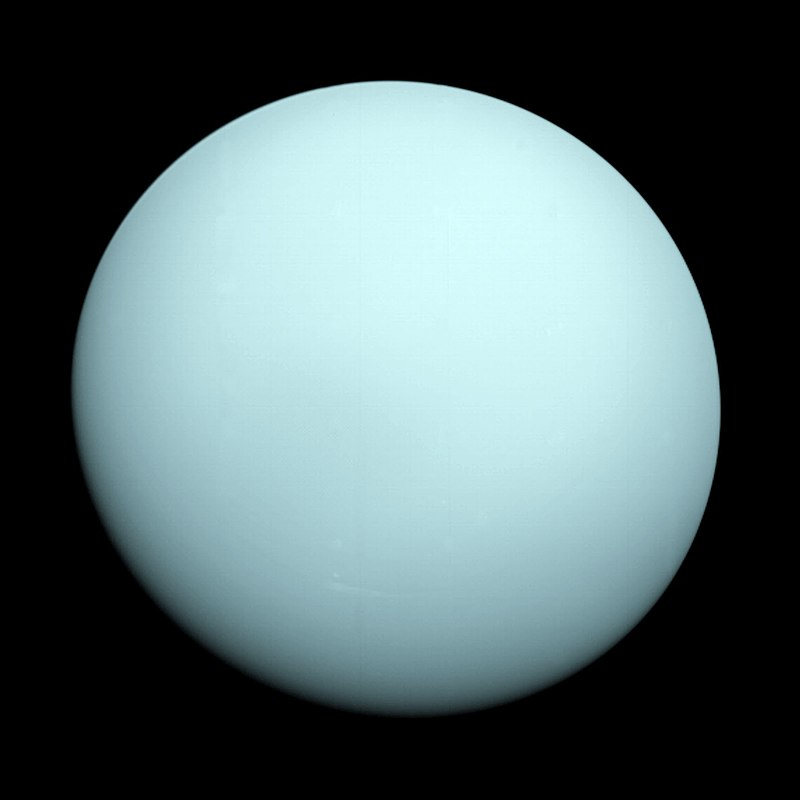

Уран е седмата планета от Слънчевата система. Тя има третия по размер планетарен радиус и четвърта по големина планетарна маса в Слънчевата система. Въпреки че е видима с невъоръжено око, подобно на петте класически планети, Уран не е наблюдавана от древните астрономи заради мъжделивостта около планетата. Сър Уилям Хершел оповестява откритието на планетата на 13 март 1781 година, с което разширява границите на познатата Слънчева система за пръв път в модерната история. Това е първата открита планета с помощта на телескоп.
Уран и Нептун имат сходна структура и химичен състав, които се различават от тези при големите газови гиганти Сатурн и Юпитер. Поради тази причина учените често ги поставят в различен клас, наречен „ледени гиганти“. Атмосферата на Уран е подобна на Юпитер и Сатурн в нейния първичен състав – основно водород и хелий, но съдържа повече вода, амоняк и метан както и следи от други въглеводороди. Това е най-студената планетарна атмосфера в Слънчевата система, с минимална температура от -224 °С и има сложна слоеста облачна структура, съдържаща основно вода в най-ниските облаци и метан в най-горния слой облаци. Вътрешността на Уран е съставена главно от лед и скала.

Ето някои данни за Уран.
| Отдалеченост от Слънцето | 2 870 658 186 км. |
| Екваториален диаметър | 50 724 км. |
| Плътност спряма водата | 1,27 пъти |
| Продулжителност на деня | 17,9 земни часа |
| Продължителност на годината | 84 земни години |
| Средна температура на повърхността | -216°C |
| Известни луни | 27 |